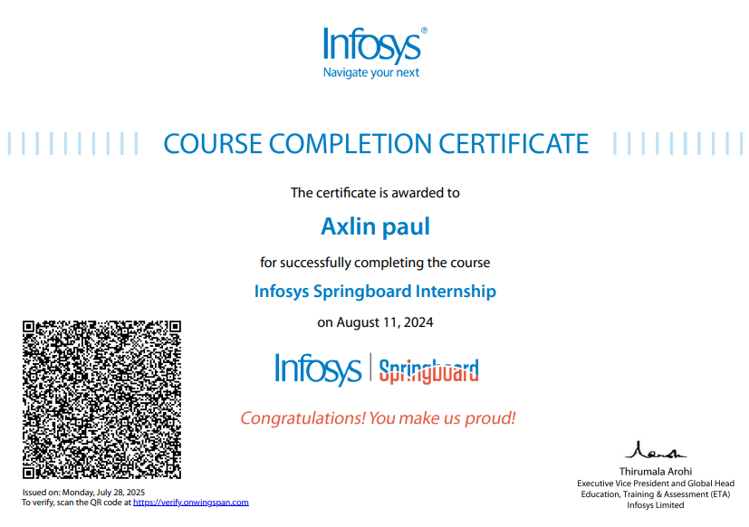
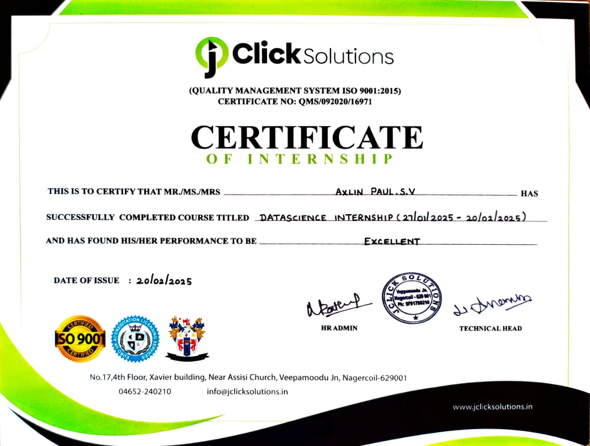
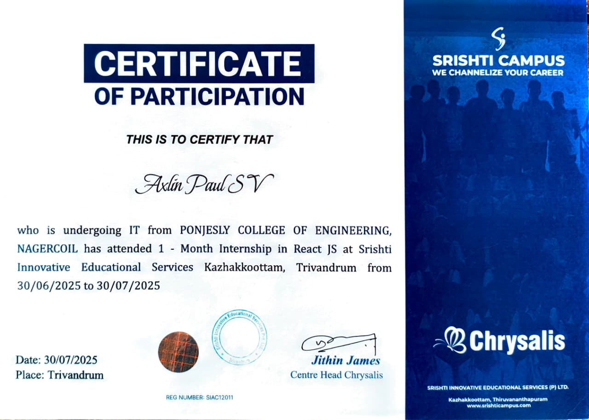
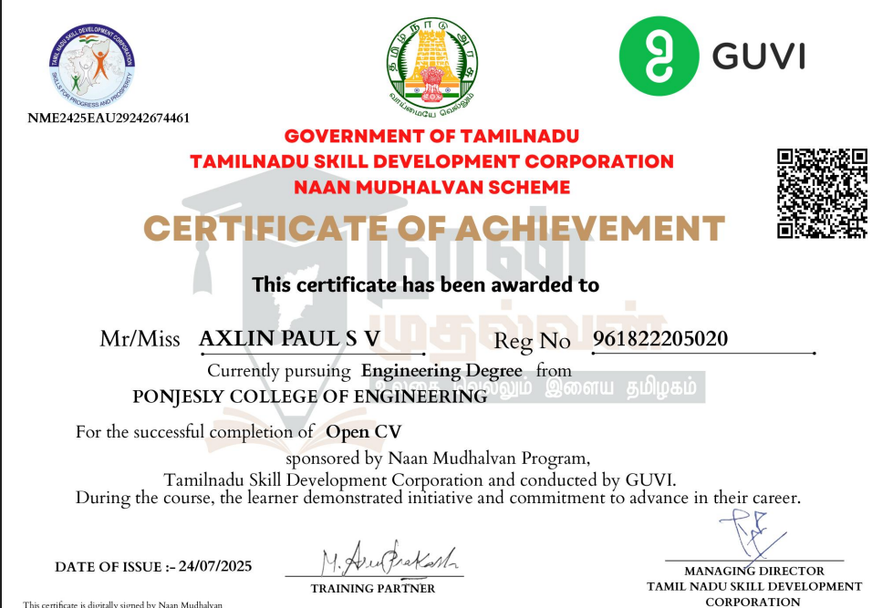
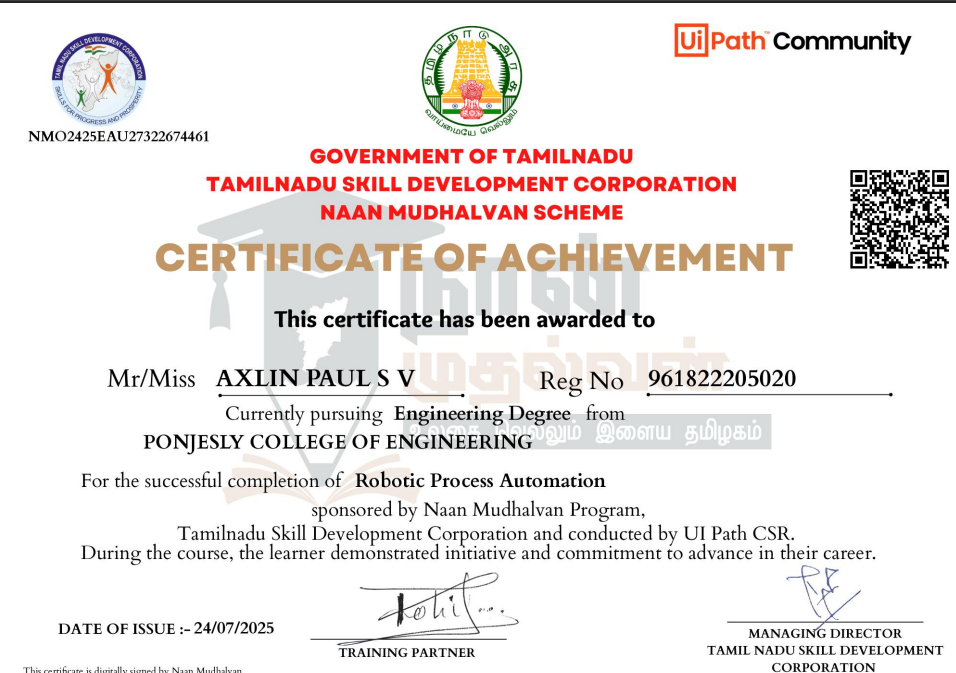
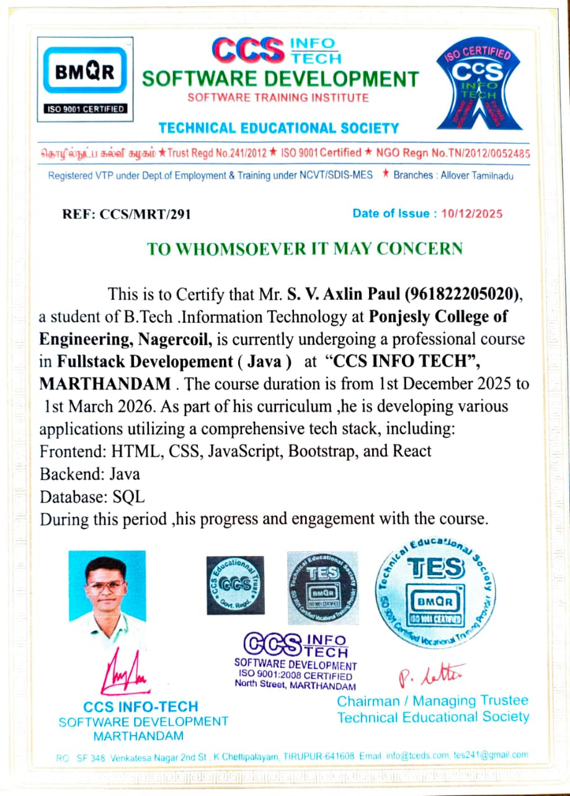
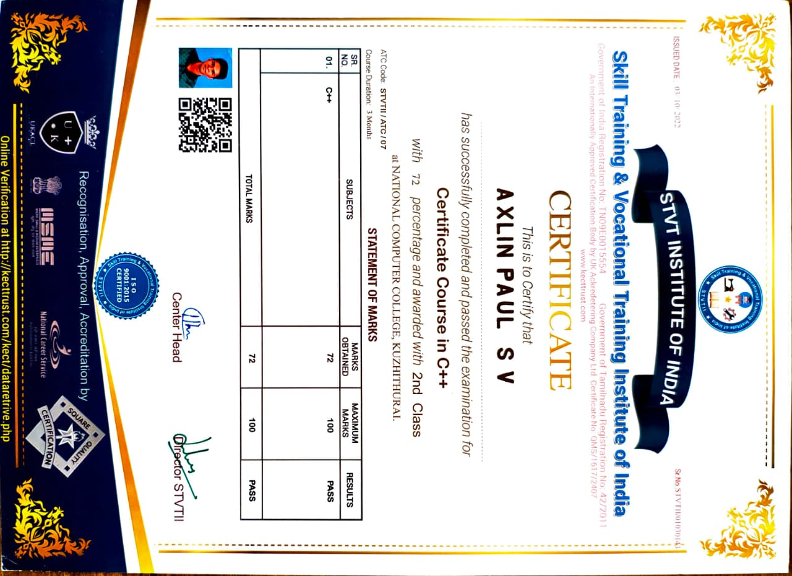

Aspiring Java Developer | B.Tech IT
I am a passionate Information Technology student with a strong interest in Java development and web technologies. I enjoy building real-world projects that help improve my programming and problem-solving skills. I am constantly exploring modern technologies and frameworks to expand my knowledge. My goal is to grow as a developer and contribute to innovative software solutions.
Java
C++
HTML
CSS
JavaScript
MySql
A secure web application built using Java, Spring Boot, and MySQL that allows users to vote online with authentication and email verification.
View ProjectA personal portfolio website built using HTML, CSS, and JavaScript to showcase skills, projects, and contact information.
View ProjectA Java-based application to manage student records including adding, updating, and deleting student information.
View Project
During my internship at Infosys, I learned modern development practices, collaborated with teams, and contributed to project-based tasks while strengthening my technical knowledge.

This course introduces the fundamentals of Data Science, focusing on data analysis, visualization, and predictive modeling. Students learn to work with datasets using Python and apply basic Machine Learning techniques to extract meaningful insights.

Worked on frontend development using HTML, CSS and JavaScript, fundamentals of React, focusing on building dynamic and responsive user interfaces. Students learn components, state management, hooks, and routing to create modern web applications.
Completed Computer Vision course under Naan Mudhalvan program and gained knowledge in image processing and AI concepts.
Built multiple Java projects including an Online Voting System and Student Management System.
Developed responsive websites using HTML, CSS, and JavaScript including a personal portfolio website.

Foundational course in Computer Vision that covers image recognition, object detection, and visual data analysis. Learners use tools like OpenCV to build simple vision-based applications.

A practical introduction to Artificial Intelligence and Robotics, where students learn how smart machines perceive, decide, and act. The course highlights automation techniques used in modern industries.

This course focuses on full-stack Web Development using Spring Boot for backend development, React for building interactive user interfaces, and MySQL for database management.

This course introduces the fundamentals of C++, including variables, data types, control structures, and functions. It builds a strong foundation for problem-solving and object-oriented programming.
Email: axlinpaul12a@gmail.com
Phone: +91 8300284653